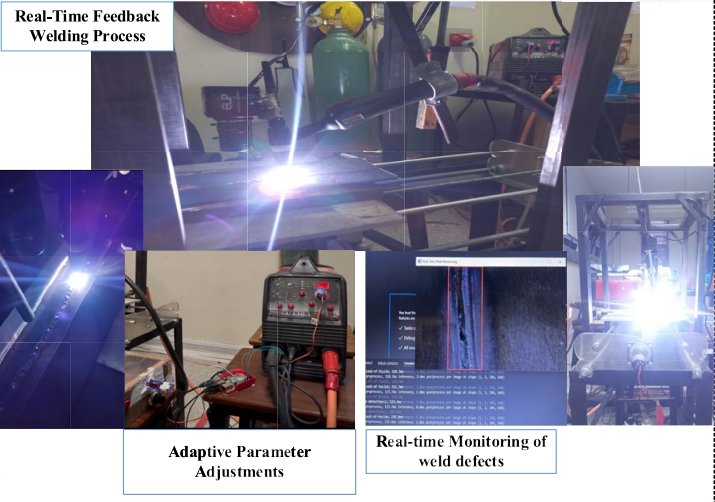
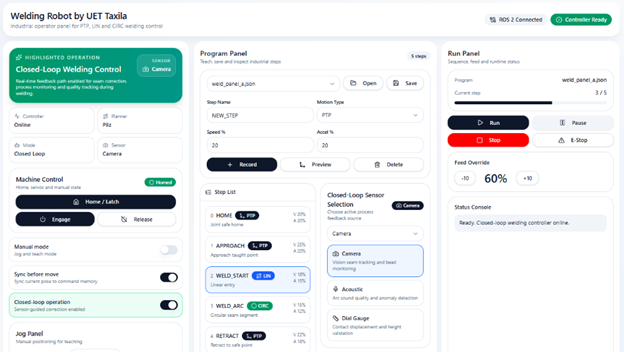
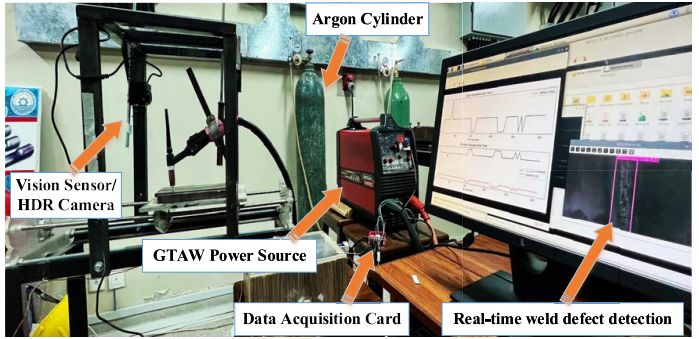
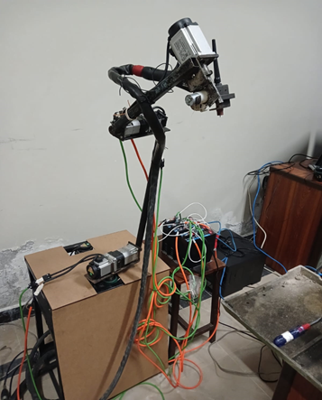
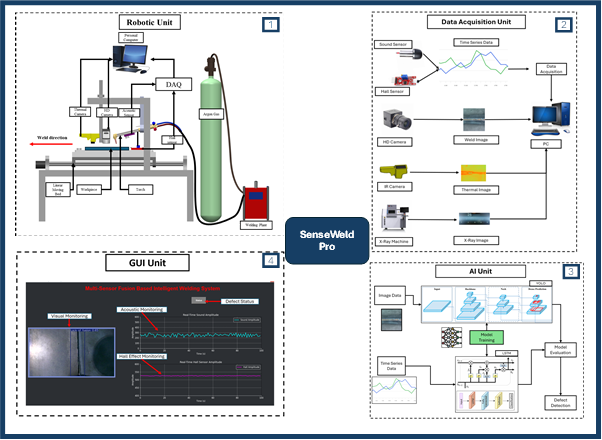

ROS-Based Robotic Control
Robot-oriented architecture for structured motion, programmable operations, and future integration with more advanced robotic workflows.
Closed-loop robotic welding, in-process monitoring, ROS-based control, AI-assisted defect detection, and adaptive process intelligence built for modern welding operations, pilot validation, and industrial collaboration.

The platform combines robotic welding, sensing, AI, and adaptive process logic into a practical welding digitization offering.
Robot-oriented architecture for structured motion, programmable operations, and future integration with more advanced robotic workflows.
AI-assisted interpretation of welding conditions through image-based defect detection and multi-sensor monitoring logic.
Closed-loop support for monitoring weld states and adjusting process conditions during operation where applicable.
SmartWeld positions research-backed welding digitization as a practical solution pathway for robotic welding, process visibility, and adaptive control.

Program panels, run control, machine control, sensor selection, and monitoring interfaces help present the solution in a way industry partners can understand quickly.
The website highlights practical project platforms that support solution development, live monitoring, and future industrial pilots.

Suitable for real-time defect detection, data acquisition, process visibility, and practical monitoring demonstrations.

A flexible robotic direction for future welding automation, demonstrative pilots, and commercialization-oriented solution development.
The offering is strongest when presented around a few clear pillars rather than too many technical details on the homepage.

Combines image, acoustic, hall-sensor, thermal, and validation-oriented sensing logic for deeper process insight.
A simple roadmap helps present the platform as solution-oriented while remaining realistic for a university-based offering.
Use this channel for pilot discussions, robotic welding collaboration, adaptive control studies, and industrial or academic engagement around SmartWeld.
Contact: Dr. Salman Hussain
Email: salman.hussain@uettaxila.edu.pk
Institution: Department of Industrial Engineering, UET Taxila